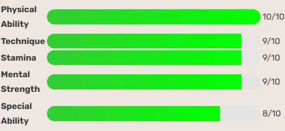
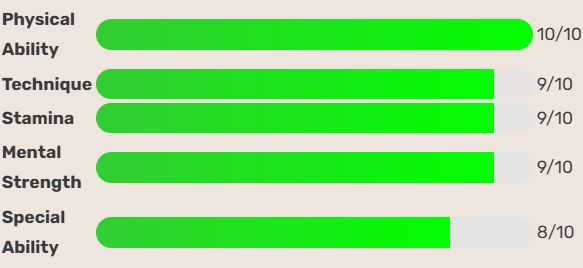

The Gorilla Captain
Takenori Akagi, the proud and powerful team captain of Shohoku, is a dominant force under the rim and a pillar of strength for his team. Towering in stature and iron-willed in discipline, Akagi has dreamt of reaching the national stage since his first day in high school. Though sometimes strict and intimidating, he deeply cares for his teammates and carries the weight of their success on his shoulders. As a traditional center, his post moves, rebounds, and shot-blocking ability intimidate opponents. Off the court, Akagi is focused, humble, and driven by a dream he refuses to give up on, to take Shohoku to the top.